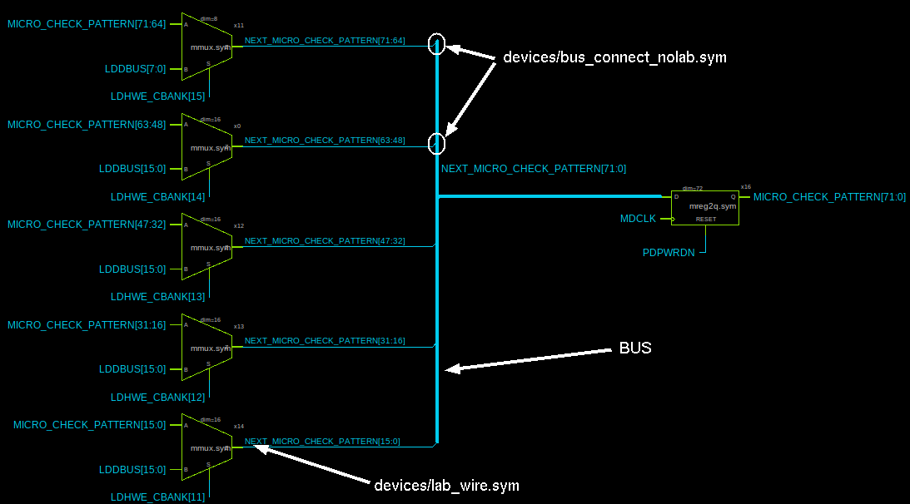

TUTORIAL: Use Bus/Vector notation for signal bundles / arrays of instances
XSCHEM has the ability to use a compact notation to represent signal bundles. There is no specific 'bus' entity, in XSCHEM a bus is simply a wire with a label representing a bundle of bits, the syntax is explained below. Normally a net label assigns a name to a wire, for example 'ENABLE', 'RESET', 'CLK' and so on, however more complex formats are available to describe multiple bits.
- AAA,BBB,CCC: described a bundle of 3 signals, AAA, BBB, CCC.
- AAA[3:0]: describes the set AAA[3],AAA[2],AAA[1],AAA[0]. The form AAA[3:0] and AAA[3],AAA[2],AAA[1],AAA[0] are exactly equivalent.
- AAA[1:0],BBB[5:4]: describes the bundle: AAA[1],AAA[0],BBB[5],BBB[4].
- AAA[6:0:2]: describes the bundle AAA[6],AAA[4],AAA[2],AAA[0].
- 2*AAA[1:0]: describes the bundle AAA[1],AAA[0],AAA[1],AAA[0].
- AAA[1:0]*2: describes the bundle AAA[1],AAA[1],AAA[0],AAA[0].
- 2*(AAA[1:0],BBB): describes the bundle AAA[1],AAA[0],BBB,AAA[1],AAA[0],BBB.
- (AAA[1:0],BBB)*2: describes the bundle AAA[1],AAA[1],AAA[0],AAA[0],BBB,BBB.
All the above notations are perfectly valid label net name attributes.
In a very similar way multiple instances can be placed in a schematic setting the 'name' attribute to a vector notation.
For example in picture below x22[15:0] represents 16 inverters with names x22[15],x22[14],...,x22[0].
In following picture there is a main 277 bit bus (the vertical thick wire) and a bus ripper symbol (devices/bus_connect.sym) is used to take a slice of bits from the main bus.
